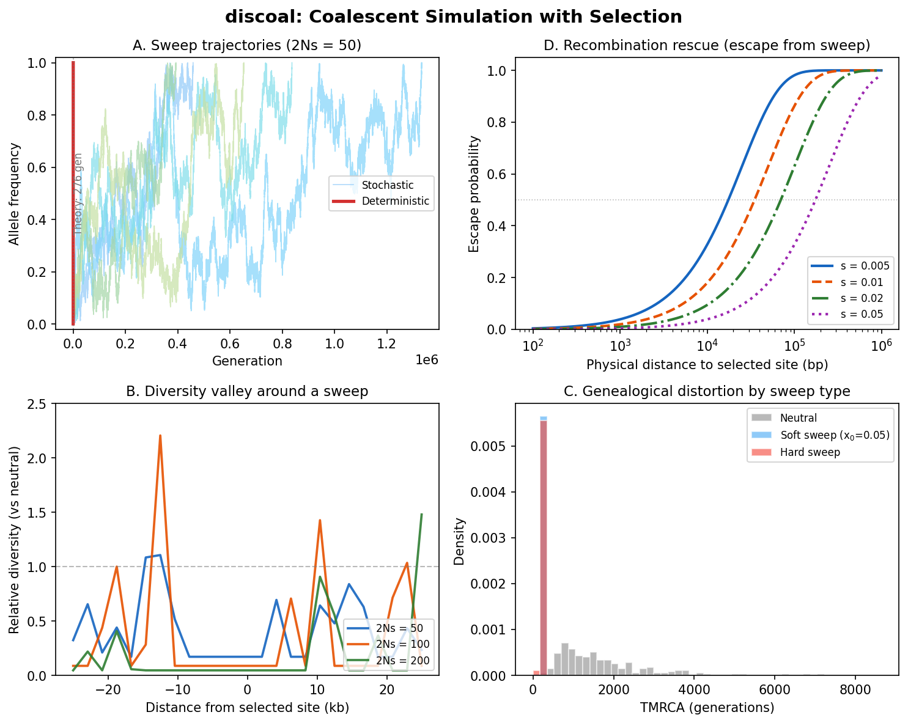

Overview of discoal
Before assembling the watch, lay out every part and understand what it does.
{kind=link}

discoal at a glance. Selective sweep signatures produced by the structured coalescent under selection. Panel A: Deterministic (logistic) vs stochastic allele frequency trajectories for a beneficial mutation sweeping to fixation. Panel B: The diversity valley – relative diversity drops near the selected site, with stronger selection producing deeper and narrower valleys. Panel C: Genealogical distortion by sweep type – hard sweeps compress TMRCAs far more than soft sweeps. Panel D: Escape probability – the chance a neutral lineage recombines free of the sweep, as a function of physical distance from the selected site.
Every Timepiece we have built so far operates under a quiet assumption: neutrality. The coalescent traces lineages backward through drift alone – no allele is favored, no allele is punished. msprime (Timepiece IV) generates entire ancestral recombination graphs under this assumption; PSMC, tsinfer, and tsdate all treat the data as if drift were the only evolutionary force.
But natural selection is real. When a beneficial mutation sweeps through a population, it drags linked neutral variation along for the ride – a phenomenon called genetic hitchhiking (Maynard Smith & Haigh, 1974). The genealogy near the selected site is compressed: diversity drops, the site frequency spectrum shifts, and extended haplotype homozygosity emerges. These are the signatures that population geneticists use to detect selection, and to generate training data for detecting them, we need a simulator that can produce genealogies under selection.
That simulator is discoal (Kern & Schrider, 2016): the discrete coalescent with selection.
Note
Prerequisites. This overview assumes you have read Overview of msprime and understand the basic coalescent with recombination. We build on that foundation by adding one new force: selection at a single locus.
What Does discoal Do?
discoal takes a model specification that includes selection at one site and produces random genealogies consistent with that model. The model specifies:
How many genomes to sample (\(n\))
How long the genome is (\(L\) base pairs)
The population mutation rate (\(\theta = 4N\mu\))
The population recombination rate (\(\rho = 4Nr\))
The strength of selection (\(\alpha = 2Ns\))
When the sweep completed (\(\tau\) in units of \(4N\) generations)
The type of sweep (hard, soft, partial)
The output is a set of \(S\) segregating sites for the \(n\) sampled haplotypes, encoding the pattern of genetic variation shaped by the sweep.
What is a “selective sweep”?
A selective sweep is what happens to neutral variation near a site where a beneficial mutation has risen to high frequency (or fixation). The term “sweep” captures the image of the beneficial allele sweeping through the population and carrying linked neutral alleles along with it.
The sweep does not change neutral alleles directly. Rather, it distorts the genealogy at linked neutral sites – compressing coalescence times for lineages that rode the beneficial allele to fixation, and potentially preserving ancient lineages on chromosomes that escaped via recombination.
The result: a valley of reduced diversity centered on the selected site, with diversity recovering as recombination distance increases.
The Core Physical Picture
Consider a population of \(2N\) haploid chromosomes (or \(N\) diploid individuals). A beneficial mutation arises at a single site on the chromosome. Over time, this mutation increases in frequency from \(1/(2N)\) to \(1.0\) (fixation). During this process, every chromosome in the population carries either the beneficial allele (call this background \(B\)) or the wild-type allele (background \(b\)).
Now consider a neutral locus at recombination distance \(r\) from the selected site. Tracing lineages backward in time through the sweep, two things happen that do not happen under neutrality:
Background-dependent coalescence. A lineage on background \(B\) can only coalesce with other \(B\) lineages, and the effective population size of the \(B\) class is \(2N \cdot x(t)\), where \(x(t)\) is the frequency of the beneficial allele at time \(t\). Early in the sweep (going backward: late in backward time), when \(x(t)\) is small, the \(B\) class is tiny and coalescence within it is extremely rapid. This bottleneck is what destroys diversity.
Recombination as migration. A recombination event between the neutral locus and the selected site can transfer a lineage from one background to the other. Going backward, a \(B\) lineage that recombines may find its neutral allele came from a \(b\) chromosome – effectively “migrating” from \(B\) to \(b\). The rate of this migration depends on \(r\) and on \(x(t)\).
Selected site
|
Chromosome: ----[neutral locus]-------*-------[neutral locus]----
^
beneficial allele
During the sweep, looking backward in time:
Background B (beneficial): Background b (wild-type):
+---------------------+ +---------------------+
| size = 2N * x(t) | | size = 2N * (1-x(t))|
| | rec | |
| lineages coalesce |<----->| lineages coalesce |
| at rate ~ 1/x(t) | | at rate ~ 1/(1-x(t))|
+---------------------+ +---------------------+
shrinks as grows as
we go further we go further
back in time back in time
The parameter that governs everything is the ratio \(r/s\):
\(r/s \ll 1\) (tight linkage or strong selection): lineages cannot escape the sweep through recombination. The sweep drags them along, forcing coalescence in the \(B\) bottleneck. Diversity is destroyed.
\(r/s \gg 1\) (loose linkage or weak selection): lineages recombine freely between backgrounds. The sweep has little effect. Diversity is preserved.
\(r/s \sim 1\): the interesting intermediate regime where some lineages escape and some don’t.
The Two-Step Algorithm
discoal’s algorithm has a clean two-step structure:
Step 1: Generate the allele frequency trajectory \(x(t)\) of the beneficial allele over time. This is computed forward in time, from the origin of the beneficial mutation to its fixation (or present-day frequency for partial sweeps).
Step 2: Run the structured coalescent backward in time, conditioned on the trajectory from Step 1. The trajectory tells us the size of each background at every point in time, which determines the coalescence and migration rates.
This separation is possible because the trajectory of the selected allele is independent of what happens at linked neutral sites (in the limit of large population size). The selected allele’s frequency follows its own dynamics, and the neutral sites passively respond.
Why can we separate the trajectory from the genealogy?
In the diffusion limit, the trajectory \(x(t)\) of the beneficial allele is determined entirely by \(s\) and \(N\) (and random drift). Neutral linked sites do not affect the trajectory – they are “along for the ride.” This means we can first sample a trajectory (Step 1) and then, treating it as given, sample a genealogy (Step 2). The two steps are conditionally independent.
This is an approximation that works well when the neutral locus is not too far from the selected site (so that the structured coalescent model is appropriate) and when we are in the diffusion regime (\(N\) is large).
Terminology
Term |
Definition |
|---|---|
\(N\) |
Effective population size (diploid). The population has \(2N\) haploid chromosomes. |
\(s\) |
Selection coefficient. Fitness of the beneficial homozygote is \(1 + s\) relative to the wild type (genic/additive selection). |
\(\alpha = 2Ns\) |
Scaled selection coefficient. The parameter that determines the strength of the sweep in coalescent units. \(\alpha \gg 1\) means strong selection. |
\(x(t)\) |
Frequency of the beneficial allele at time \(t\) (forward time). |
\(\tau\) |
Time since the sweep completed (fixation), measured in units of \(4N\) generations. \(\tau = 0\) means the sweep just finished. |
\(r\) |
Recombination rate between the neutral locus and the selected site (per generation). |
\(\rho = 4Nr\) |
Scaled recombination rate for the full sequence. |
\(\theta = 4N\mu\) |
Scaled mutation rate for the full sequence. |
Background \(B\) |
The set of chromosomes carrying the beneficial allele. Going backward in time, this class shrinks from the full population to a single chromosome. |
Background \(b\) |
The set of chromosomes carrying the wild-type allele. Going backward, this class grows. |
Hard sweep |
The beneficial allele originates as a single new mutation (\(x_0 = 1/(2N)\)). All \(B\) copies trace to one ancestor. |
Soft sweep |
The beneficial allele starts at frequency \(x_0 > 1/(2N)\), either from standing variation or recurrent mutation. Multiple ancestral copies exist at the onset of selection. |
Partial sweep |
The beneficial allele has not yet reached fixation. Its current frequency is \(c < 1\). |
Parameters
discoal’s parameters map directly to the biological model:
Parameter |
Symbol |
Physical meaning |
|---|---|---|
Sample size |
\(n\) |
Number of haploid genomes sampled from the population. |
Sequence length |
\(L\) |
Number of base pairs (or recombination units). |
Mutation rate |
\(\theta\) |
\(4N\mu L\): expected number of mutations in the genealogy per site, scaled. Controls the density of segregating sites. |
Recombination rate |
\(\rho\) |
\(4NrL\): population-scaled recombination rate for the full sequence. Controls how quickly the sweep effect decays with distance. |
Selection strength |
\(\alpha\) |
\(2Ns\): determines how fast and how completely the beneficial allele sweeps. \(\alpha = 1000\) is a strong sweep; \(\alpha = 10\) is weak. |
Sweep age |
\(\tau\) |
Time since fixation in units of \(4N\) generations. \(\tau = 0\) means the sweep just completed. Larger \(\tau\) means the sweep is more ancient and neutral drift has had time to partially restore diversity. |
Sweep position |
\(x_{\text{pos}}\) |
Position of the selected site along the chromosome (can be at the center or offset, allowing linked selection studies). |
Why use scaled parameters?
discoal follows the tradition of Hudson’s ms program, using coalescent
scaling: \(\theta = 4N\mu\), \(\rho = 4Nr\), \(\alpha = 2Ns\).
This removes \(N\) from the equations entirely – the coalescent depends
only on these scaled quantities. Compare this to msprime, which takes raw
rates (\(\mu\), \(r\), \(s\)) and an explicit \(N\).
The conversion is straightforward:
The Flow in Detail
Now that we have named all the parts, let us see how they mesh together in the complete algorithm:
Input: n, L, theta, rho, alpha, tau, sweep_type
|
v
STEP 1: Generate trajectory x(t)
|
+---> Deterministic? Use logistic: x(t) = 1/(1 + C*exp(-s*t))
|
+---> Stochastic? Simulate conditioned Wright-Fisher diffusion
| backward from fixation, using "fictitious selection"
|
v
Store trajectory as array: x[0], x[1], ..., x[T_sweep]
|
v
STEP 2a: Neutral phase (present to tau)
| Standard Hudson coalescent with recombination.
| No selection. Lineages coalesce and recombine normally.
|
v
STEP 2b: Sweep phase (tau to tau + T_sweep)
| Assign all lineages to background B (the sweep just fixed).
| For each trajectory step, going backward:
| - Compute coalescence rates in B and b
| - Compute recombination-migration rates B<->b
| - Draw next event (coalescence or migration)
| - Update lineage assignments
| At end of sweep: merge all B lineages (single ancestor).
|
v
STEP 2c: Ancestral neutral phase (before sweep)
| Remaining lineages (those that escaped to b via recombination)
| coalesce under standard neutral coalescent.
|
v
Add mutations: Poisson process on branches, rate theta/2 per unit time
|
v
Output: n x S haplotype matrix
Ready to Build
You now have the high-level blueprint of discoal’s mechanism. The key insight to carry forward is simple: selection at one site creates structure at linked sites. This structure – the partitioning into \(B\) and \(b\) backgrounds with time-varying sizes – is what discoal simulates.
In the following chapters, we build each gear from scratch:
The Allele Frequency Trajectory – How to generate the frequency trajectory \(x(t)\) of the beneficial allele, both deterministically (logistic) and stochastically (conditioned diffusion). This is the mainspring that drives everything.
The Structured Coalescent Under Selection – The structured coalescent during the sweep: coalescence rates within each background, recombination as migration, and the inhomogeneous process that ties them to the trajectory.
Hard, Soft, and Partial Sweeps – Hard sweeps, soft sweeps, and partial sweeps: how each variant modifies the algorithm and produces distinct genealogical signatures.
discoal and msprime: Two Takes on Sweeps – How discoal’s algorithm compares to msprime’s sweep implementation, Python translations of the core code, and what distinguishes the two approaches.
Each chapter derives the math, explains the intuition, implements the code, and verifies it works – following the watchmaker’s philosophy of building understanding gear by gear.
Let us start with the mainspring: the allele frequency trajectory.